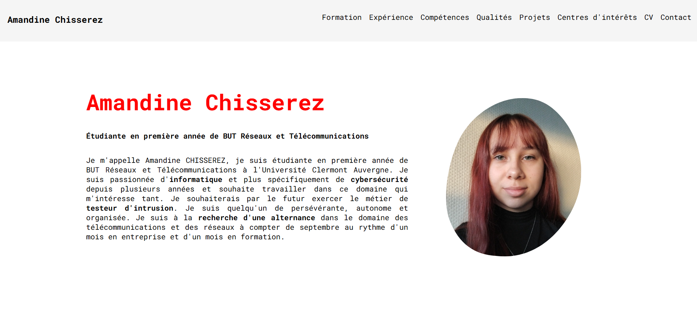
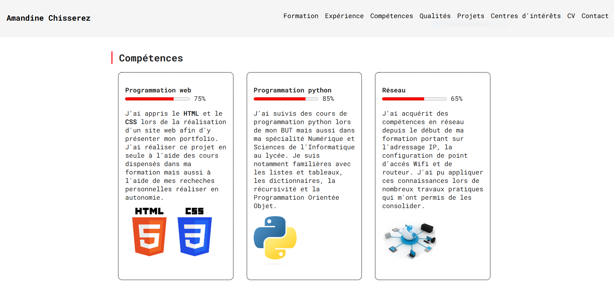

Projet portfolio
J'ai réalisé ce projet visant à réaliser un site web à l'aide de HTML et CSS afin de présenté mon portfolio lors de ma première année de formation.
J'ai acquérit des compétences en programmation web lors de la réalisation de ce site web visant à présenter mon portfolio.
Il a été réalisé seule et en autonomie.

Lors de ce projet j'ai utilisé du HTML et du CSS que j'ai pu apprendre à utiliser grâce aux cours de ma formation, mais aussi grâce à mes recherches personnelles. J'ai avancé petit à petit sur la création du site web en me documentant dès que je fesait fasse à une problèmatique afin de la résoudre. En effet, il m’a par exemple, été nécessaire de faire de nombreuses recherches afin de présenter la rubrique compétences de mon portfolio sous forme de case ainsi que d’y incorporer une barre de compétences.

Ce projet m’a ainsi permis de fortement développer mon autonomie et ma persévérance> afin d'obtenir un site web présenté de la façon désirée.
Ce projet à été pour moi une réussite en terme de monté en compétences en developemment web mais aussi en terme de résultat qui correspond au site web que j'imaginais et que j'ai pu mettre en ouvre.